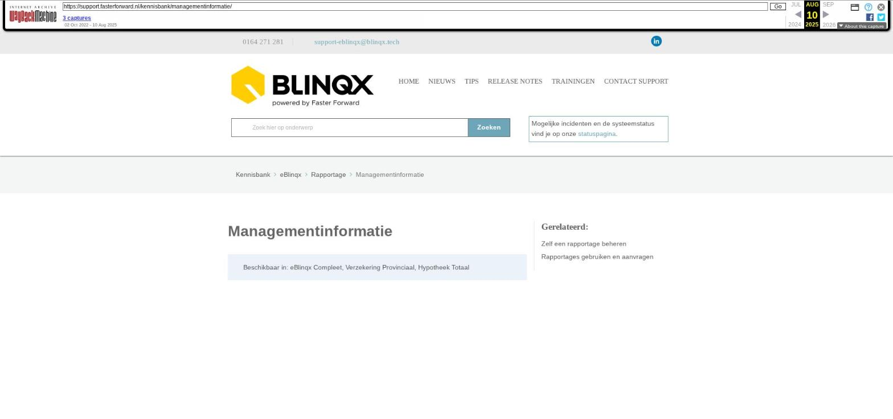

Managementinformatie

Tekstinhoud
Managementinformatie
Beschikbaar in: eBlinqx Compleet, Verzekering Provinciaal, Hypotheek Totaal
Met eBlinqx Insights heb je inzicht in de data van je eBlinqxomgeving. Gegevens in het systeem worden omgezet in overzichtelijke grafieken. Zo heb je eenvoudig, realtime en overal inzicht in al je managementinformatie.
Let op: De grafieken zijn alleen zichtbaar voor gebruikers die recht hebben op de winst & verlies module. Wanneer andere gebruikers ook inzicht willen hebben in de grafieken, kunnen ze dit aanvragen bij een consultant of via support-eblinqx@blinqx.tech.
Beschikbare grafieken
Beschikbare grafieken
Omzet en kosten
Kosten per periode t.o.v. vorig jaar
Kosten cumulatief t.o.v. vorig jaar
Omzet per periode t.o.v. vorig jaar
Omzet cumulatief t.o.v. vorig jaar
Omzet en kosten t.o.v. vorig jaar
Aantal afspraken
Afspraken per adviseur van afgelopen maand
Eerste afspraken in afgelopen maand per adviseur
Dossier
Producten afgesloten in het afgelopen half jaar
Aantal HDN aanvragen per week
FTR: Afgekeurde stukken per maand
Nieuwe klanten per maand
Managementgrafieken op het dashboard
Omzet en kosten
Om de bedrijfsresultaten van dit jaar te vergelijken met vorig jaar, zijn de cijfers per maand inzichtelijk gemaakt in een staafdiagram.
Kosten per periode t.o.v. vorig jaar
In deze staafdiagriam zie je het aantal kosten per periode van dit jaar ten opzichte van vorig jaar in dezelfde periode. Zo zie je hoeveel kosten je in iedere periode maakt en vergelijk je dit met dezelfde periode in het vorige jaar. De kosten zijn het totaal van alle kostenrekeningen van jouw administratie.
Kosten cumulatief t.o.v. vorig jaar
In deze grafiek zie je het cumulatief aantal kosten van dit jaar ten opzichte van vorig jaar in dezelfde periode. Zo zie je hoeveel kosten je dit jaar al hebt gemaakt en vergelijk je dit met vorig jaar. De kosten zijn het totaal van alle kostenrekeningen van jouw administratie.
Omzet per periode t.o.v. vorig jaar
In deze grafiek zie je de totale omzet per periode van dit jaar ten opzichte van vorig jaar in dezelfde periode. Zo zie je hoeveel omzet je in iedere periode maakt en vergelijk je dit met dezelfde periode in het vorige jaar. De omzet is het totaal van alle omzetrekeningen van jouw administratie.
Omzet cumulatief t.o.v. vorig jaar
In deze grafiek zie je de cumulatieve omzet van dit jaar ten opzichte van vorig jaar in dezelfde periode. Zo zie je hoeveel omzet je dit jaar al hebt gemaakt en vergelijk je dit met vorig jaar. De omzet is het totaal van alle omzetrekeningen van jouw administratie.
Omzet en kosten t.o.v. vorig jaar
In deze grafiek zie je de totale omzet per maand, ten opzichte van de totale kosten per maand. Zo zie je hoeveel omzet en kosten je in iedere maand maakt en vergelijk je dit met het vorige jaar.
Aantal afspraken
Afspraken per adviseur van afgelopen maand
In deze grafiek zie je het aantal afspraken per adviseur van de afgelopen maand. Zo vergelijk je eenvoudig het aantal afspraken van verschillende adviseurs. Het aantal afspraken geeft het aantal taken van het type "afspraak" voor een persoon met de functie "adviseur" weer. Enkel de afspraken die gekoppeld zijn aan een dossier worden weergegeven.
Eerste afspraken in afgelopen maand per adviseur
In deze cirkeldiagram zie je het aantal eerste afspraken per adviseur van de afgelopen maand. Zo vergelijk je eenvoudig het aantal eerste afspraken van verschillende adviseurs. Het betreft een "eerste" afspraak wanneer de personen in het dossier nog niet eerder een afspraak met deze adviseur heeft gehad. Het aantal afspraken toont het aantal taken van het type "afspraak" voor een persoon met de functie "adviseur". Alleen de afspraken die gekoppeld zijn aan een dossier worden getoond.
Dossier
Als advieskantoor wilt je weten hoe de indeling van de portefeuille verdeeld is. Om dit snel in te zien, zijn de types producten die onlangs gesloten zijn inzichtelijk gemaakt. Daarnaast zie je hoeveel HDN aanvragen er gedaan zijn, afgezet tegen het gemiddelde van de markt.
Producten afgesloten in het afgelopen half jaar
In deze grafiek zie je het aantal producten met een startdatum in de afgelopen 6 volledige maanden. Zo zie je welke producten er het afgelopen half jaar afgesloten zijn. Producten die ondertussen gearchiveerd, beëindigd of verwijderd zijn, worden niet weergegeven. De grafiek toont alle producten in jouw omgeving.
Aantal HDN aanvragen per week
In deze grafiek zie je het totaal aantal aanvragen voor hypotheken (AX), levensverzekeringen (LX) en kredieten (KX) per week (ma t/m zo). De blauwe lijn toont de aanvragen uit jouw eBlinqxomgeving.
FTR: Afgekeurde stukken per maand
In dit staafdiagram zie je een overzicht van het aantal afgekeurde stukken per maand, gegroepeerd per type. Het betreft een "afgekeurd stuk" wanneer de status van dit stuk wordt aangepast naar "Afgekeurd opnieuw aan te leveren". Dit gebeurt na ontvangst van een HDN-bericht van de maatschappij.
Onder deze diagram kan je verder filteren op behandelaar, maatschappij of kantoor. Het tonen van het filter is afhankelijk van bijvoorbeeld het aantal behandelaars en kantoren in een omgeving.
Ook kan je met je muis op de staafdiagram gaan staan om meer informatie te krijgen. Door erop te klikken kan je verder inzoomen en filteren op dat specifieke resultaat. Zo kan je de soort stukken zien of weer filteren op behandelaar en kantoor.
Op deze manier krijg je zowel een totaal overzicht als details over de afgekeurde stukken.
Nieuwe klanten per maand
In deze grafiek zie je de nieuwe klanten van de afgelopen maand. Het betreft een nieuwe klant wanneer er een eerste product is afgesloten in een dossier, waarvan de startdatum valt in de betreffende maand. Ook gearchiveerde- en beëindigde producten worden hier getoond.
Managementgrafieken op het dashboard
Er zijn meerdere grafieken beschikbaar als tegel op het dashboard. Deze tegels zijn alleen zichtbaar als je inzicht heb in de managementgrafieken. Klik erop om de managementinformatie-pagina te openen.
Om deze tegels te zien op je dashboard, moet je ze zelf inrichten. De tegels heten 'Producten afgesloten in het afgelopen half jaar', 'Afspraken in maand per kantoor', 'Omzet per periode' en 'Eerste afspraken in maand per adviseur' en 'Aantal HDN aanvragen per week'.
Laatste update: 11 april 2025
Was deze informatie nuttig?
Ja Nee